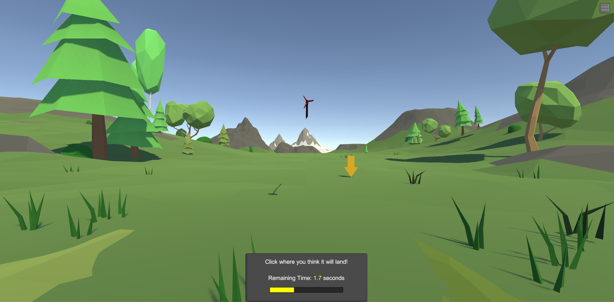

Education
University of California, Santa Barbara
Expected Date of Graduation: June 2019
Majoring in mechanical engineering
GPA: 3.35
Technical Skills
Proficent in: MATLAB, C#, Python, HTML, CSS, Latex
Experienced with: Javascript, PHP, SQL
Software: Solidworks, Abaqus, Blender, Unity
Other: Windows/Unix Commands, Git
Awards
Junior Year Mechanical Engineering Design Challenge: Best Technical
June 2018
Designed a safety device for a coffee maker used by dementia patients
Research Experience
Research Assistant, Department of Neuroscience
September 2018 - present
Designed hardware and software of an automated mouse training system
Video Game Developer, Department of Anthropology
September 2018 - present
Developed video games used in a research experiment
Personal Projects
Thermal Network Solving Tool (MATLAB)
June 2018
Created a MATLAB tool for solving equilibrium and transient behavior of arbitrary thermal networks
Wildy - A 3d Multiplayer Online Battle Game (C#)
June 2017- present
Created a realtime-networked multiplayer online game (work in progress)
Single Degree of Freedom Oscillation Simulator (MATLAB)
December 2017
Created a MATLAB tool to solve and animate single DOF oscillators
Deep Learning Neural Network AI for Tic Tac Toe (MATLAB)
September 2017
Created a library-free machine learning model to play tic tac toe
Work Experience
Server: Ritz Carlton Bacara Santa Barbara, CA
June 2017 - June 2018
Created an enjoyable personalized eating experience for guests at a high end resort
Maintained working order of a restaurant in a fast-paced environment
Sales representative: Capay Organic, San Leandro, CA
May 2016 - October 2016
Represented Capay Organic at various events
Valet: Luxe Valet, San Francisco, CA
January 2016 - May 2016
Communicated with customers
Parked Vehicles
Server: Bacara Resort and Spa, Santa Barbara, CA
June 2015 - December 2015
Created an enjoyable personalized eating experience for guests at a high end resort
Maintained working order of a restaurant in a fast-paced environment
Many experiments at the Dr. Goard Research lab involve imaging the brains of mice while they play simple video games. One of the largest challenges with running these experiments is training the mice to play the games. I am currently optimizing the design of an automated training system that allows mice to play the video games at their leisure, and rewards them for their performance.
The mouse being trained is able to access this viewport from a hole in its cage. It uses the handlebar shaped joystick to play the game, and receives water from the spout upon success
Joystick input is read through an optical rotary encoder, and limits of rotation are set by two servo motors.

The mouse's task is to move the grated circle to coincide with the green circle.
Studies testing mental rotation of 2-dimensional presentations of 3-dimensional objects have shown better performance in males. A UCSB experiment in the department of anthropology aims to test whether performance in mental rotation might have been an evolutionary trait that improved hunting ability in early humans. I designed a series of video games for this experiment.
The games can be downloaded here (for Windows):
Download Link

One of the tasks requires participants to guess the landing location of a projectile.

Another Task requires participants to track a moving animated rabbit with a computer mouse.

The participants are tested in their ability to quickly find camouflaged animals in various photos.